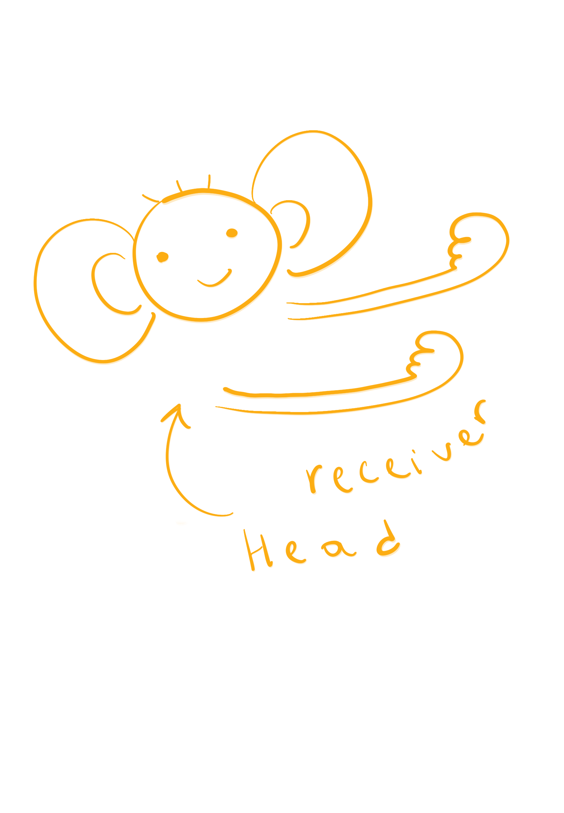

Question ID —
Question Text
Loading...
Ground Truth
—
Cue Answer
—
Reasoning Acc
—
No-Reasoning Acc
—
Faithfulness %
—
Below I look at the cued versus uncued versions of the rollout for question ID —, —

Top Receiver Heads
Cued Rollout
Uncued Rollout
Attention Patterns
Click on a head above to view its attention matrix. Hover for values.
Cued Rollout
L0-H0 Faithfulness rate: —%Select a head to view attention
Top Source Sentences (Stripes)
Uncued Rollout
L0-H0Select a head to view attention
Top Source Sentences (Stripes)
Summary
Shared Heads among cued and uncued versions
Shared Source Sentences
—
Cue in Top Sources (Cued)
Now I look at the faithful and unfaithful rollout examples for the cued only version of question ID —, —